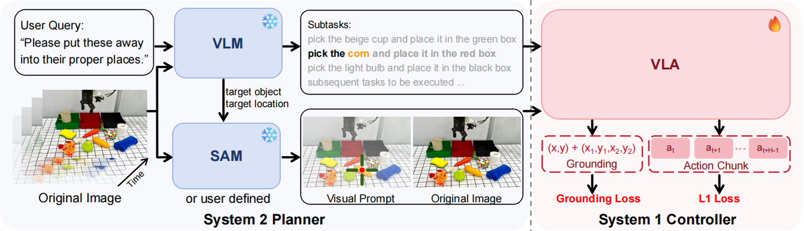
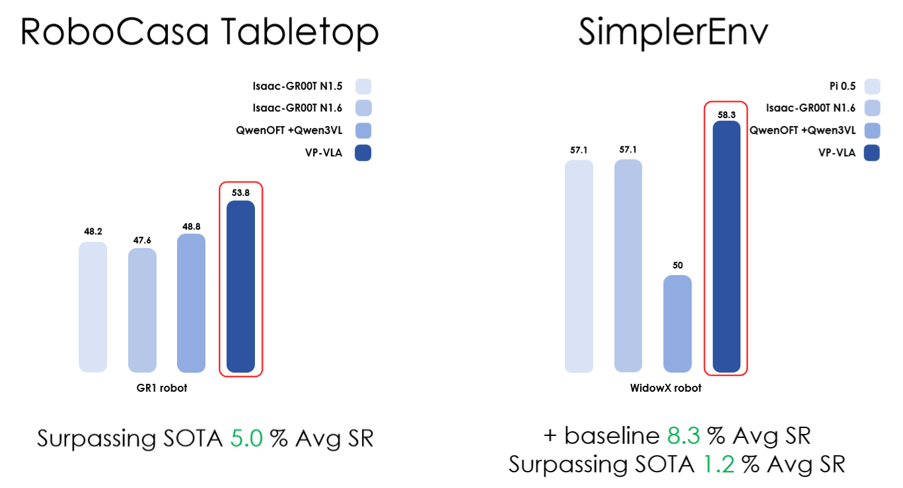

Vision-Language-Action (VLA) models typically map visual observations and linguistic instructions directly to robotic control signals. This "black-box" mapping forces a single forward pass to simultaneously handle instruction interpretation, spatial grounding, and low-level control, often leading to poor spatial precision and limited robustness in out-of-distribution scenarios. To address these limitations, we propose VP-VLA, a dual-system framework that decouples high-level reasoning and low-level execution via a structured visual prompting interface. Specifically, a "System 2 Planner" decomposes complex instructions into sub-tasks and identifies relevant target objects and goal locations. These spatial anchors are then overlaid directly onto visual observations as structured visual prompts, such as crosshairs and bounding boxes. Guided by these prompts and enhanced by a novel auxiliary visual grounding objective during training, a "System 1 Controller" reliably generates precise low-level execution motions. Experiments on the Robocasa-GR1-Tabletop benchmark and SimplerEnv simulation demonstrate that VP-VLA improves success rates by 5% and 8.3%, surpassing competitive baselines including QwenOFT and GR00T-N1.6.

VP-VLA adopts a dual-system pipeline that decouples high-level reasoning and low-level execution via structured visual prompting: the System 2 Planner uses a VLM to decompose complex language instructions into subtasks, identifies target objects and locations, and generates structured visual prompts (crosshairs, bounding boxes) via SAM for overlay on raw images; the System 1 Controller takes language instructions, raw visual observations and visual prompt images as inputs to produce precise sensorimotor trajectories for robots. In training, it combines L1 loss for action prediction with visual grounding loss on key frames (backpropagated only to the VLM backbone), ensuring the controller aligns with the spatial cues of visual prompts and boosting the spatial precision and robustness of multi-stage manipulation.

On the Robocasa-GR1-Tabletop simulation benchmark, VP-VLA hits a state-of-the-art average success rate of 53.8%, outperforming the main baseline QwenOFT by 5% and surpassing other strong models like Isaac-GR00T N1.5/N1.6, with remarkable gains in multi-step pick-and-place and novel generalization tasks; on the SimplerEnv benchmark, it achieves a 58.3% average success rate, an 8.3% absolute improvement over QwenOFT, outperforming π0.5 and Isaac-GR00T-N1.6-Bridge, and excels in precise object identification and spatial grounding tasks such as putting eggplant in a yellow basket (95.8% success rate). Overall, VP-VLA outperforms all competitive baselines on both simulation benchmarks in both in-distribution and out-of-distribution settings.